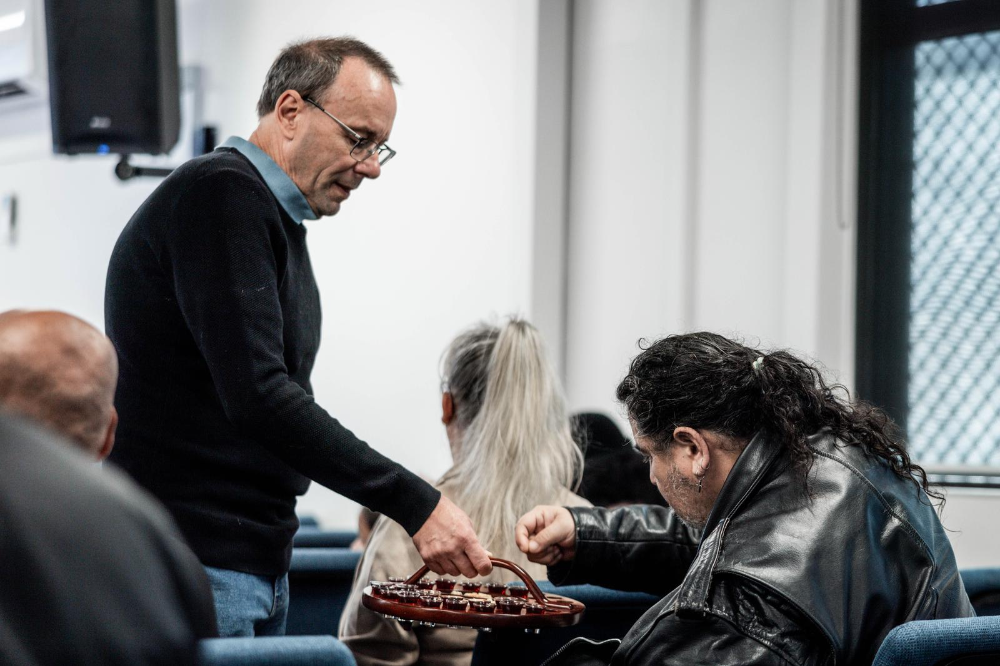

Empowering Ordinary People
for God's Extraordinary Mission
No matter where you are in your faith journey, there's a next step for you. We are committed to walking alongside you as you discover what it means to follow Jesus.
Talk to Someone at WynLifeGet to Know Jesus
It all starts with getting to know the real Jesus. Not a caricature, not a myth — but the historical person of Jesus of Nazareth who claimed to be the Son of God, who died for our sins, and who rose from the dead.
If you'd like to explore who Jesus is, we'd love to help. Our pastors are available to talk, and we can point you to great resources to help you on your journey.
Talk to Someone at WynLife

Become Like Jesus
Jesus invites us to follow Him — to learn about who we are, and how we can know Him more. This is a life-long journey of transformation by the power of the Holy Spirit.
Getting involved in a Life Group, joining a midweek gathering, and being part of Sunday services all help us grow and become more like Jesus.
Talk to Someone at WynLifeLive Like Jesus
You don't have to dress like Jesus or eat what He ate — just live a life of honour and purpose with God. As followers of Jesus, we're called to love our neighbours, serve our community, and reflect God's character in everything we do.
This looks like serving at our Food Bank, supporting each other in Life Groups, and being a good neighbour in the Wyndham area.
Talk to Someone at WynLife
Baptism
Baptism is a public declaration of your faith in Jesus Christ — a sign that you have died to your old life and risen to new life in Him. At WynLife, we celebrate baptisms regularly and would love to support you in taking this step.
If you're considering baptism, please reach out and we'd love to chat with you about it.
Talk to Someone at WynLife